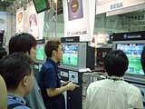
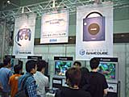
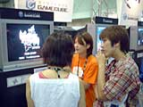

| #6 あの話題作も出展中！ ニンテンドーゲームキューブ・ライセンシーソフト |
あの話題作も出展中！ ニンテンドーゲームキューブ・ライセンシーソフト page1 ・・・ page2 |
| ● バーチャストライカー３ ｖｅｒ.２００２（仮称） セガ |
|
 アーケードで圧倒的な人気を誇るサッカーゲーム、バーチャストライカーの最新バージョンが、ニンテンドーゲームキューブに登場です。シンプルな操作系統にもかかわらず、様々な戦術とリアルな臨場感を生み出す、まさに究極のサッカーゲーム。それにオリジナルゲームモードまで追加されるって言うんですから、ファンにとっては感涙ものですね。ただただ、発売が待ち遠しいです。 それにしても、こういうゲームではディスクの読み込みによる一瞬の画面飛びが気になるものですが、開発中にもかかわらず、その動きには全く飛びなどなく、きわめてスムーズでした。というよりも、プレー中は光メディアだってことをすっかり忘れてましたよ。動きもグラフィックもアーケード以上で、改めてゲームキューブのパワーに感心してしまいました。 |
| ● PHANTASY STAR ONLINE（仮称） セガ |
|
 会員登録数30万人オーバーという、大人気のネットワークＲＰＧ、ファンタシースターオンラインが、ニンテンドーゲームキューブのオンラインゲーム第1号として登場します。自動翻訳システム「ワードセレクトシステム」搭載なので、インターネットを通じて、世界中のユーザーと一緒に遊んだり、会話したりすることができますよ。さらに、ニンテンドーゲームキューブ版ではオフラインでも複数の友達と楽しめるように、画面を分割して4人まで同時にプレイができるそうです。
4台のマシンが用意された体験ブースでは、実際にオンラインプレーが楽しめるようになってますので、オンラインゲーム未体験の人は、ぜひこの機会に体験してみてください。 |
| ● ボンバーマンジェネレーション ハドソン |
|
ファミコン版の発売以来、不動の人気を誇るボンバーマンシリーズ最新作。今では対戦ゲームの定番としてもおなじみですね。今回は、３Ｄアニメ調で妙にリアルになったボンバーマン達が、360度視点変更が可能な、これまたリアルなステージを舞台に活躍します。アクション性が高くなり、属性の違う4種類のボムが合成できるなど、ストーリープレイはさらに奥深く、じっくりと遊べそう。もちろん、対戦プレイの面白さは折り紙付きで、今回はサバイバル戦のほか、勝利条件の異なる4つの対戦プレイが楽しめるそうです。 今日(24日)は招待日ということで、1人でストーリーモードをプレイしている人が多かったようですが、色々な仕掛けや謎解きが用意されていて、皆さん楽しそうに遊んでいました。もちろん、対戦プレイも体験できますので、明日以降、友達同士や兄弟、姉妹でいらっしゃる方は、ぜひとも対戦モードを楽しんでくださいね。 |
| ● ＲＵＮＥ（仮称） フロム・ソフトウェア |
|
 カードアクションＲＰＧという、なんとも欲張りなジャンル名のこのゲーム。カードゲームでありながら戦闘はリアルタイム、カード自身が経験を積んでクラスチェンジするなど、従来のカードゲームにはない新要素が満載。カードを集める、デッキを編集する、というカードゲームの基本的な楽しさに、使って育てる、という新たな楽しみが加わったわけですね。対戦は2人までですが、これが格闘ゲームのようにリアルタイムで進行するので、かなりアツいバトルが楽しめると思いますよ。 斬新なゲーム性なので、体験コーナーでは慣れないプレイヤーの為に、1台1台にスタッフが付きっきりで説明されてました。明日からも頑張ってくださいね。 |
あの話題作も出展中！ ニンテンドーゲームキューブ・ライセンシーソフト page1 ・・・ page2 |
| 前のレポートへ | 次のレポートへ |
|
|